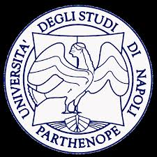

Laura Inno
Astrophysicist | Researcher | Educator
Astrophysicist | Researcher | Educator
I am a postdoctoral researcher in Astrophysics at the Science and Technology Department of the Parthenope University of Naples, where I teach Physics and conduct research in Space Science, Observational Astronomy, and Astrophysics. I am a member of the ESA Mission Comet Interceptor Target Identification Working Group, the Vera Rubin LSST Solar System Science Collaboration, and the Weave Survey. I am also actively involved in several international collaborations and have a strong interest in Astronomical Education and DEI activities.
My research is centered around stellar astrophysics, exoplanetary science, and Solar System bodies, with key leadership roles in major projects.
Below is a selection of my most recent publications:
My teaching experience includes the following courses:
Email: laura.inno@uniparthenope.it